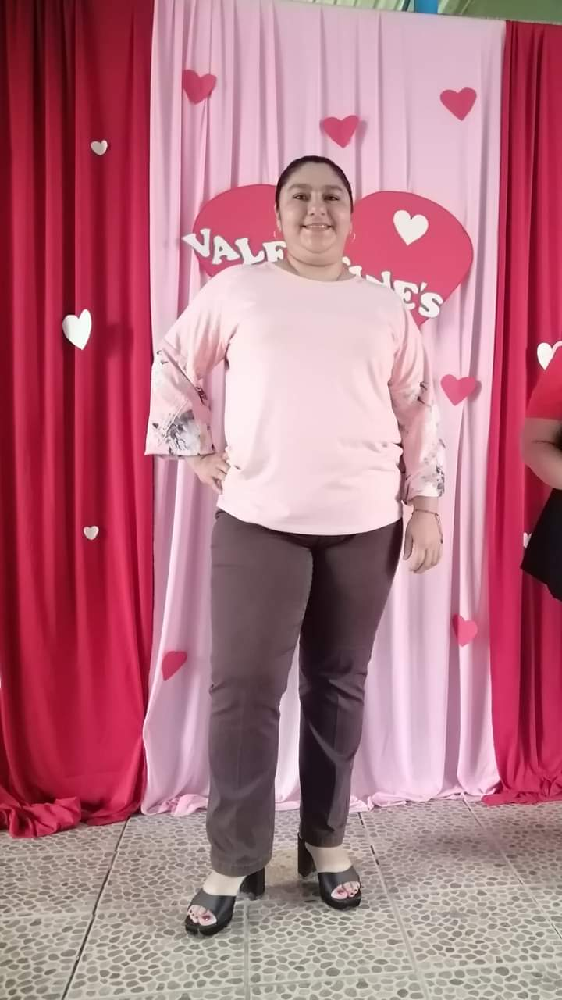
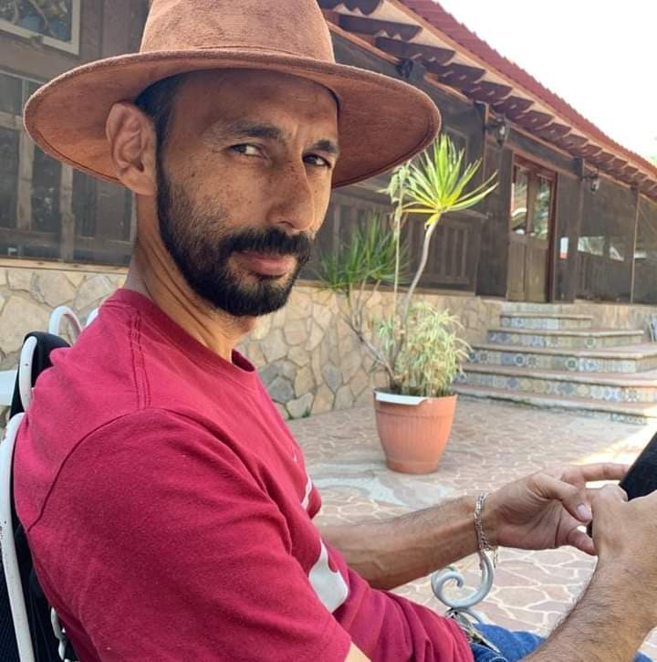

Nuestras Autoridades son:
| Cargo: | Datos y Funciones |
Director |
Nombre: Guido Adolfo Martinez Funez
Funcion que cumple: Es el máximo responsable del centro educativo. Ecargado de todos los tramites de cualquier indole que se presenten en la intitucion. |
Subdirectora |
Nombre: Eblin Janeth Sabillon Trochez
Funcion que cumple: Se encarga de garantizar que el proceso pedagógico siga las políticas educativas, orientar la enseñanza a través de métodos y técnicas pedagógicas, y evaluar y mejorar los procesos educativos a través de la participación de la comunidad escolar. |
Consejera |
Nombre: Lizzie Maria Zelaya Pineda
Funcion que cumple: En el espacio de Consejería Escolar se escucha al estudiante y se le brindan herramientas básicas para hacer frente a su problemática. Las funciones de la Consejera Escolar son: Apoyar, Alertar y Prevenir. NO se brinda terapia psicológica. |
Orientador |
Nombre: Cinthia Yolany Sabillon Ramirez
Funcion que cumple: El orientador educativo se ocupa de detectar cualquier problema de índole educativa y de asesorar tanto a educadores como familias y los propios menores en cuestión de decisiones educativas. |
Secretario |
Nombre: Hector David Sabillón Sabillón
Funcion que cumple: Los secretarios escolares se dedican a gestionar la secretaría de la escuela y a brindar apoyo administrativo al equipo directivo y a otros miembros del personal del centro. |
Secretario |
Nombre: María Concepción Sanchez Medina
Funcion que cumple: Los secretarios escolares se dedican a gestionar la secretaría de la escuela y a brindar apoyo administrativo al equipo directivo y a otros miembros del personal del centro. |
Secretario |
Nombre: Karla Amaya
Funcion que cumple: Los secretarios escolares se dedican a gestionar la secretaría de la escuela y a brindar apoyo administrativo al equipo directivo y a otros miembros del personal del centro. |
Sub-Secretario |
Nombre: Sergia Paz Hernandez
Funcion que cumple: Se encarga de la gestión de los centros educativos en función de los recursos humanos, académicos o tecnológicos para elevar la calidad académica y mejorar sus procesos |